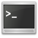

Konsole
Achtung!
Dieser Artikel beschreibt den Terminal-Emulator von KDE. Der Begriff "virtuelle Konsole" wird im Artikel Terminal erklärt, "Konsolen-Emulatoren" sind im Artikel Spiele/Hilfsprogramme zu finden.
Man sollte auf Grund der Mehrdeutigkeit insbesondere im Forum stets deutlich machen, ob man mit "Konsole" das hier beschriebene KDE-Programm, ein Terminalfenster oder etwas anderes meint.
Dieser Artikel wurde für die folgenden Ubuntu-Versionen getestet:
Ubuntu 14.04 Trusty Tahr
Zum Verständnis dieses Artikels sind folgende Seiten hilfreich:
  Konsole
Konsole  ist der bei KDE mitgelieferte Terminal-Emulator. Zahlreiche Konfigurationsmöglichkeiten und hohe Funktionalität zeichnen Konsole aus. So wird beispielsweise Tabbing, das Setzen von Lesezeichen sowie ein beliebig großer durchsuchbarer Verlaufsspeicher unterstützt. Im Gegensatz zu den meisten anderen Terminalprogrammen baut Konsole nicht auf xterm auf, sondern wurde komplett neu programmiert.
ist der bei KDE mitgelieferte Terminal-Emulator. Zahlreiche Konfigurationsmöglichkeiten und hohe Funktionalität zeichnen Konsole aus. So wird beispielsweise Tabbing, das Setzen von Lesezeichen sowie ein beliebig großer durchsuchbarer Verlaufsspeicher unterstützt. Im Gegensatz zu den meisten anderen Terminalprogrammen baut Konsole nicht auf xterm auf, sondern wurde komplett neu programmiert.
Installation¶
Bei Kubuntu ist Konsole standardmäßig vorinstalliert. Wer das Programm unter Ubuntu/Xubuntu verwenden möchte, muss das Paket
konsole
 mit apturl
mit apturl
Paketliste zum Kopieren:
sudo apt-get install konsole
sudo aptitude install konsole
installieren [2].
Benutzung¶
Konsole starten¶
Konsole kann über "K-Menü -> Anwendungen -> System -> Terminal (Konsole)" oder alternativ über KRunner und die Eingabe des Befehls
konsole
gestartet werden [1]. Unter Gnome findet es sich unter "Anwendungen -> Systemwerkzeuge -> Konsole".
Die Konsole kann auch in andere Programme wie z.B. den Dateimanagern Dolphin, den Browser Konqueror oder den Editor Kate direkt eingebettet werden oder über diese Anwendungen geöffnet werden.
Unterfenster¶
Konsole verwendet Unterfenster (auch bekannt als Tabs oder Reiter) und somit können in einer Konsole mehrere Terminals gleichzeitig geöffnet sein. Im Unterschied zu vielen anderen Anwendungen wie Browsern werden die Reiter am unteren Fensterrand angezeigt.
Ein neues Unterfenster kann über die Tastenkombination Strg + ⇧ + T oder über "Datei -> Neues Unterfenster" geöffnet werden. Über die Tastenkombination Strg + ⇧ + W oder "Datei -> Unterfenster schließen" kann das aktuell geöffnete Unterfenster geschlossen werden.
Über die Tastenkombinationen ⇧ + → und ⇧ + ← kann zwischen den Unterfenstern mit Hilfe der Tastatur gewechselt werden. Ein Unterfenster kann mittels der Tastenkombinationen Strg + ⇧ + → und Strg + ⇧ + ← in der Reihenfolge nach links oder rechts verschoben werden.
Ein einzelnes Unterfenster lässt sich auch verselbständigen, d.h. in ein eigenes Konsole-Fenster heben. Dazu klickt man auf "Ansicht -> Sitzung verselbständigen" (alternativ Tastenkürzel Strg + ⇧ + H ).
Ansichten¶
Das Konsolenfenster lässt sich in verschiedene Ansichten teilen. Somit erhält man eine ähnliche Funktionalität wie durch den Einsatz von Screen oder kachelnden Fenstermanagern. Die Verwaltung der Ansichten lässt sich über das Menü "Ansicht -> Ansicht teilen" vornehmen. Man kann die Ansicht entweder horizontal über "Ansicht -> Ansicht teilen -> Ansicht Links/Rechts teilen" (alternativ Tastenkürzel Strg + ⇧ + 8 ) oder vertikal über "Ansicht -> Ansicht teilen -> Ansicht Oben/Unten teilen" (alternativ Tastenkürzel Strg + ⇧ + 9 ) teilen. Eine Kombination aus horizontal und vertikal geteilten Ansichten ist nicht möglich.
Wenn mehrere Ansichten verwendet werden, wird die Unterfensterleiste in jeder Ansicht angezeigt. Es ist also möglich verschiedene Unterfenster gleichzeitig zu sehen.
Die Größe der einzelnen Ansichten kann über die Trennleiste zwischen den Ansichten mittels der Maus verändert werden. Alternativ kann man auch über das Menü "Ansicht -> Ansicht teilen -> Ansicht vergrößern" und "Ansicht -> Ansicht teilen -> Ansicht verkleinern" die Größe verändern.
Über "Ansicht -> Ansicht teilen -> Aktive Ansicht schließen" (alternativ Tastenkürzel Strg + ⇧ + S ) wird die aktuell benutzte Ansicht geschlossen. Über "Ansicht -> Ansicht teilen -> Andere Ansichten schließen" (alternativ Tastenkürzel Strg + ⇧ + O ) werden alle anderen Ansichten geschlossen.
Lesezeichen¶
Konsole unterstützt wie ein Webbrowser Lesezeichen. Man kann sich also Lesezeichnen für einzelne Ordner speichern und somit direkt in diese Ordner navigieren. Die Lesezeichen unterstützen auch entfernte Shells wie zum Beispiel SSH.
In Konsole kommt die gleiche Lesezeichenverwaltung wie im Browser Konqueror zum Einsatz und ist komplett über das Menü "Lesezeichen" zu erreichen.
Profile¶
Konsole bietet die Möglichkeit, über Profile das Verhalten und Aussehen zur Laufzeit zu ändern. Alle verfügbaren Profile werden im Menü "Einstellungen -> Profil verwalten" angezeigt und durch Auswahl einer der Punkte wird das Profil gewechselt. Zusätzlich können neue Profile angelegt und bestehende bearbeitet werden. Konsole selbst bietet keinen eigenen Konfigurationsdialog, alle Einstellungen werden im Profil vorgenommen.
Allgemeine Einstellungen¶
Im Reiter "Allgemein" lassen sich einige Einstellungen für das Profil vornehmen. So kann man dem Profil einen Namen geben und über "Befehl" die zu verwendende Shell einstellen. Des Weiteren kann der Ordner festgelegt werden, in welchem das Terminal in einem neuen Unterfenster gestartet wird. Standardmäßig ist dies der selbe Unterordner wie das aktuelle Unterfenster.
Unterfenster¶
Im Reiter "Unterfenster" kann deren Verhalten konfiguriert werden. Hier kann zum Beispiel die Beschriftung der Unterfenster für lokale und entfernte Shells individuell festgelegt werden. Es gibt dazu folgende Steuerzeichen:
| Steuerzeichen | Bedeutung |
| %n | Programmname |
| %d | Aktueller Ordner (Kurzform) |
| %D | Aktueller Ordner (Langform) |
| %w | Durch Shell gesetzter Fenstertitel |
| %# | Sitzungsnummer |
| %u | Benutzername |
| %h | Entfernter Rechner (Kurzform) |
| %H | Entfernter Rechner (Langform) |
Des Weiteren lassen sich in diesem Reiter Einstellungen zur Unterfensterleiste vornehmen. So kann man konfigurieren, ob die Leiste ausgeblendet werden soll und ob sie oberhalb oder unterhalb des Terminalfensters angezeigt werden soll. Es gibt auch die Möglichkeit, Knöpfe für "Neues Unterfenster" und "Unterfenster schließen" in der Leiste anzuzeigen.
Erscheinungsbild¶
Terminalprogramme besitzen meist die Fähigkeit, Text in verschiedenen Farben darzustellen. Testen kann man die Farbdarstellung z.B. mit dieser Eingabe:
echo -e "\e[0mVordergrundfarbe\n\e[7mHintergrundfarbe\e[0m" &&
for i in `seq 0 7`; do echo -e "\e[0;3${i}mFarbe $i\e[0m"; done &&
echo -e "\e[1mIntensive Vordergrundfarbe\n\e[7mIntensive Hintergrundfarbe\e[0m" &&
for i in `seq 0 7`; do echo -e "\e[1;3${i}mFarbe $i intensiv\e[0m"; done Konsole bietet mehrere vordefinierte Farbschemata und die Möglichkeit diese zu bearbeiten oder ein eigenes Farbschema zu erstellen. Hierzu wählt man im Konfigurationsdialog des Profils den Reiter "Erscheinungsbild".
Im Abschnitt "Farbschema & Hintergrund" werden alle verfügbaren Farbschemata aufgelistet. Fährt man mit der Maus über einen der Punkte, so erhält man eine Sofortvorschau - die Farben der geöffneten Konsole werden direkt geändert.
Über die Schaltflächen "Neu" und "Bearbeiten" öffnet sich ein Dialog, um ein neues Farbschema zu erstellen bzw. das ausgewählte zu bearbeiten. Hier werden in einer Tabelle alle Farben aufgeführt und angezeigt. Durch einen Klick auf die Farbe öffnet sich ein Dialog zum Auswählen der Farbe.
Zusätzlich kann man eine prozentuale Hintergrund-Transparenz einstellen. Der Hintergrund wird jedoch nur transparent dargestellt, wenn ein Compositing Fenstermanager wie KWin oder Compiz verwendet wird.
 - Grundlegende Informationen über ein Terminal
- Grundlegende Informationen über ein Terminal
- Erstellt mit Inyoka
-
 2004 – 2017 ubuntuusers.de • Einige Rechte vorbehalten
2004 – 2017 ubuntuusers.de • Einige Rechte vorbehalten
Lizenz • Kontakt • Datenschutz • Impressum • Serverstatus -
Serverhousing gespendet von